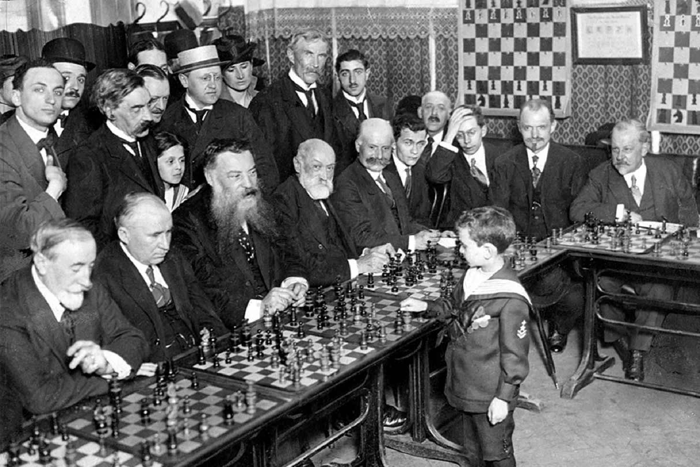
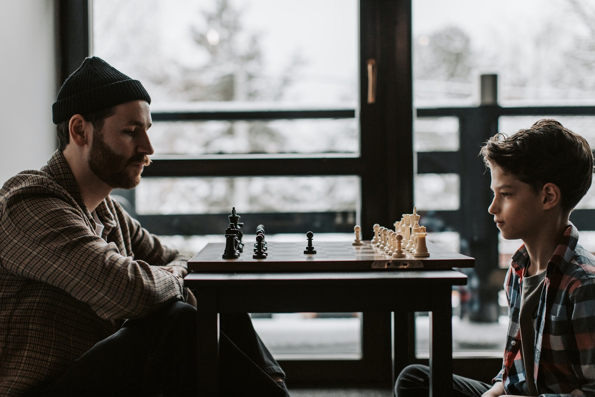

Povijest kluba
Šah klub Karlovac osnovan je 1965.,a službeno registriran 15. siječnja 1975. godine. Kroz svoju bogatu povijest osvojio je brojna odličja s raznih natjecanja poput prvih mjesta na europskim prvenstvima, svjetskim kupovima , šahovskim festivalima i mnogim drugim. Osim bogate natjecateljske povijesti, krasi ga organizacija brojnih šahovskih manifestacijama na kojima su prisustvovali hrvatski i svjetski šahovski prvaci Vasily Smyslov i Mikhail Tal.
Također, klub ima dugu povijest treniranja mlađih naraštaja i suradnja sa odgojno-obrazovnim institucijama te društvenom zajednicom. Brojni šahovski majstori- osvajači kadetskih i juniorskih prvenstva, liga i kupova potekli su upravo iz Šah kluba Karlovac. Danas, ti isti majstori su ugledni akademski građani i svoje znanje šire novim generacijama. Takav ishod nas ni ne čudi jer je kvalitetan rad s mladima oduvijek bio temelj kluba. Cilj takvog načina rada je stvaranje odgovorne i društveno aktivne osobe koja doprinosi zajednici.
Klub danas
Šah klub Karlovac danas se aktivno natječe u kadetskim i seniorskim natjecanjima. Najznačajniji rezultat u novijoj povijesti kluba je višestruki naslov prvaka Europskog prvenstva. U klupskoj organizaciji svaki mjesec se održavaju pozitivni seniorski turniri čime nastavljamo tradiciju organiziranja šahovskih manifestacija te oboćujemo Karlovačku i Hrvatsku šahovsku scenu.
Najveći napori i dalje se ulažu u rad s djecom i mladima.Treninzi za mlade se održavaju najmanje 3 puta tjedno u novoobnovljenim prostorijama kluba. Mlade aktivno potičemo na bavljenje natjecateljskim šahom te im u tome pružamo svu potrebnu podršku i pomoć.
Također, stavljamo poseban naglasak na okupljanje šahista-rekreativaca svih dobnih skupina za koje organiziramo treninge jednom tjedno.